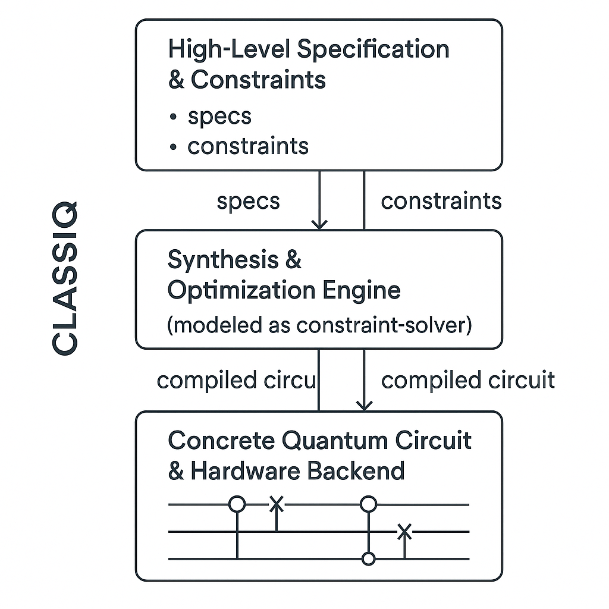
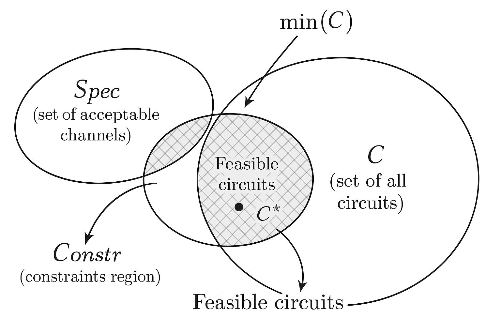
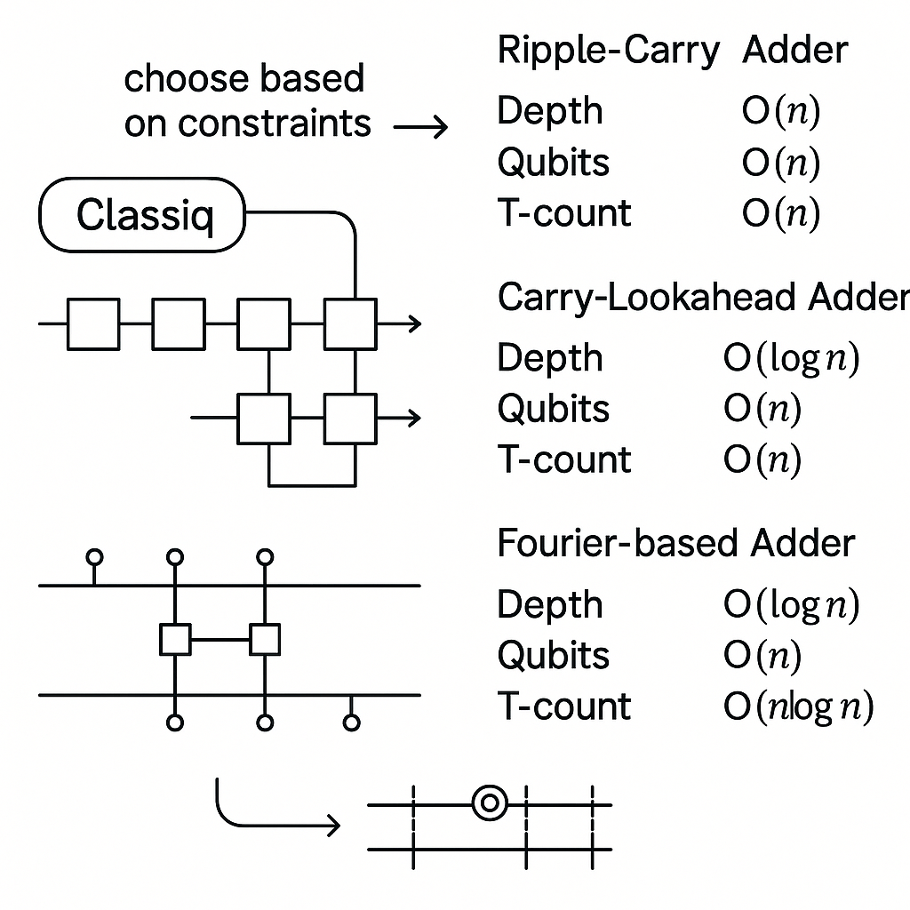
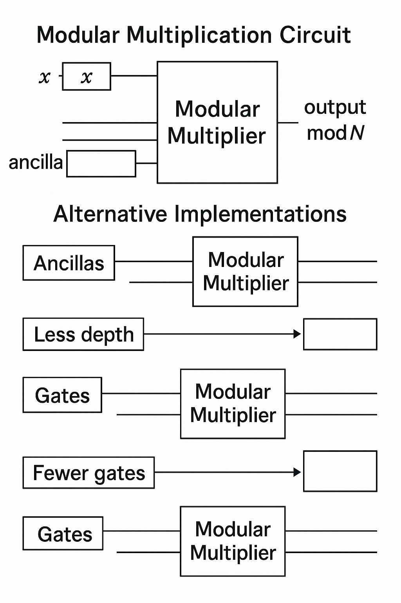
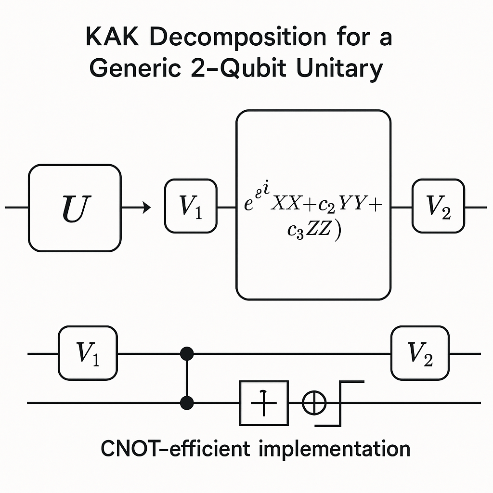
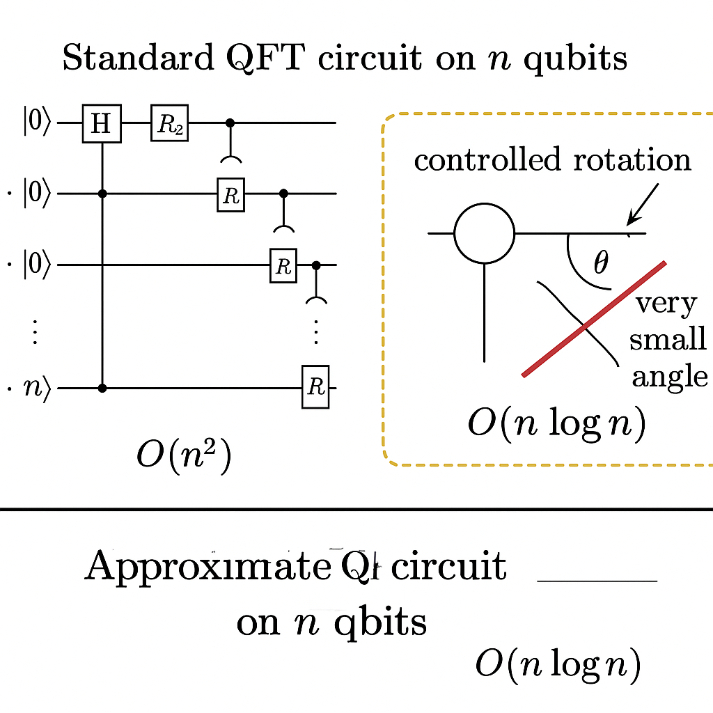
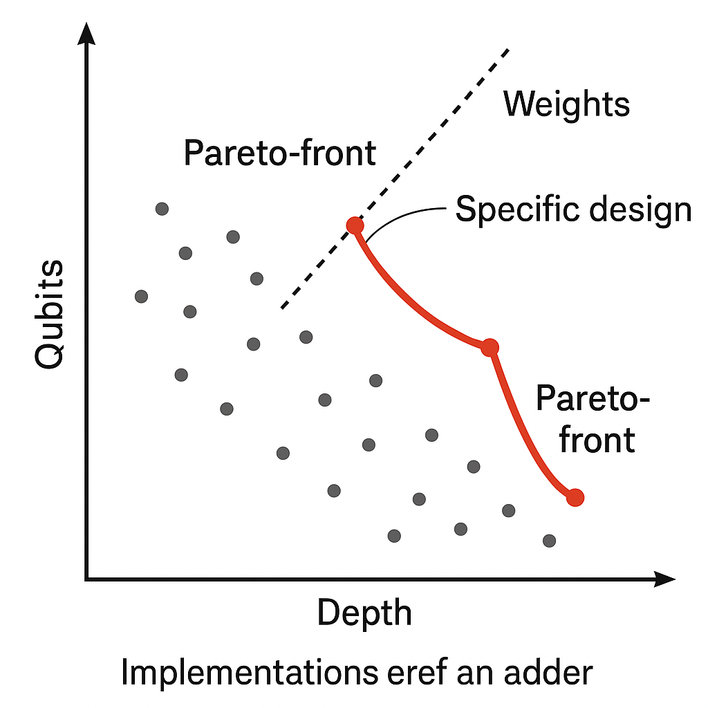
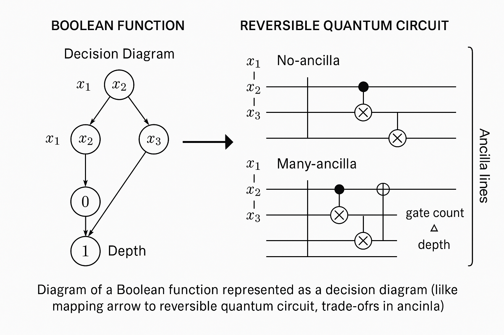
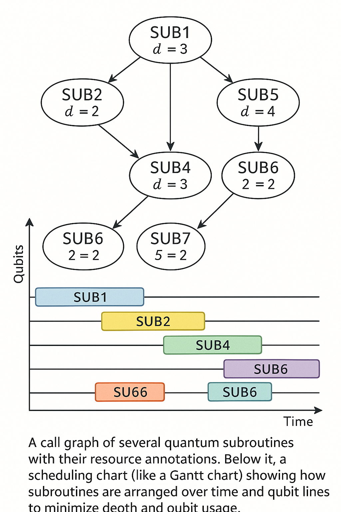
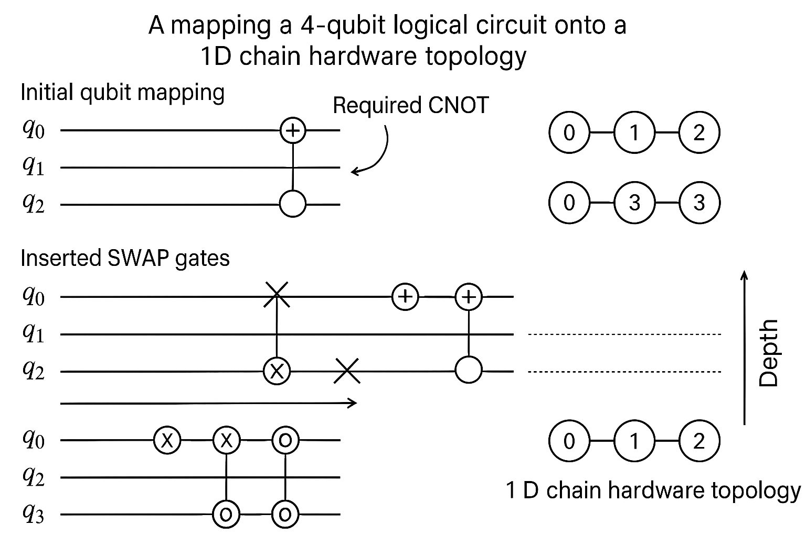

Generated by ChatGPT on 2025-12-02
本講聚焦於 Classiq 平台最具研究價值的核心能力之一：從高階規格 (high-level specification) 自動合成最佳化量子電路，並探討其背後的數學結構與形式化模型。相較於第 1、2 講較偏向基礎介紹與平台概觀，本講將以博士研究者為對象，深入探討：

Classiq 的核心理念是：使用者不直接設計閘級電路，而是描述「要做什麼」而非「怎麼做」。本節先用數學語言形式化這個過程。
設一個量子演算法的「意圖」可抽象為一族允許的量子通道集合： \[ \mathcal{F} = \{ \Phi_\theta : \mathcal{H}_{\text{in}} \to \mathcal{H}_{\text{out}} \mid \theta \in \Theta \}, \] 其中：
實務上，Classiq 允許使用者指定的是：
我們將所有可行電路的集合記為： \[ \mathcal{C} = \{ C \mid C \text{ 是在可用硬體與閘庫上可實現的量子電路} \}. \] 每個電路 \(C \in \mathcal{C}\) 對應到一個量子通道 \(\Phi_C\)（通常是 unitary 或 CPTP 映射）。
Classiq 的合成問題可表述為下列約束最佳化問題： \[ \begin{aligned} \text{給定：}&\quad \text{功能規格 } \mathsf{Spec}, \text{約束集合 } \mathsf{Constr}, \text{代價函數 } \mathsf{Cost}: \mathcal{C} \to \mathbb{R}. \\ \text{求：}&\quad C^\star = \arg\min_{C \in \mathcal{C}} \mathsf{Cost}(C) \\ \text{使得：}&\quad C \text{ 滿足功能規格 } \mathsf{Spec}, \\ &\quad C \text{ 滿足所有約束 } \mathsf{Constr}. \end{aligned} \]
其中「功能規格滿足」可以形式化為： \[ d\big(\Phi_C, \Phi_\theta\big) \le \varepsilon, \] 對某個適當的距離或度量 \(d\)，例如 diamond norm 距離或 operator norm 距離。對於純 unitary 情形，常用： \[ d(U, V) = \min_{\phi \in [0,2\pi)} \| U - e^{i\phi} V \|_{\text{op}}. \]

在 NISQ 與中長期 FTQC 場景中，最常見的資源度量包括：
Classiq 一般允許你給出一個向量型成本函數，例如： \[ \mathsf{Cost}(C) = \alpha_q \, n_q(C) + \alpha_D \, D(C) + \alpha_T \, T(C) + \alpha_2 \, G_2(C), \] 其中 \(\alpha_\bullet\) 可由使用者設定或由平台預設。亦可採取多目標最佳化的 Pareto-front 搜尋，本講暫以加權和模型為例。
對於資源度量的形式化，Classiq 在實作層會將成本函數轉換為 整數線性成本（或更一般的混合整數非線性成本），這使得許多子問題可被視為： \[ \min_{x \in \mathbb{Z}^k} c^\top x \quad \text{s.t.}\quad A x \le b, \ x \in \mathcal{D}, \] 其中 \(x\) 代表設計決策（例如某段子電路選擇哪種合成方案），\(\mathcal{D}\) 反映離散結構，如「是否使用某種 ancilla 策略」的 0-1 變數。
許多量子演算法（如 Shor、HHL、量子金融定價）都依賴大規模的 可逆算術 (reversible arithmetic)：加法、乘法、模運算等。Classiq library 中提供了大量這類元件的高階規格，並由合成器自動產生最佳化電路。
考慮最簡單的 n-bit 可逆加法： \[ \mathsf{Add}_n : \ket{x}\ket{y} \mapsto \ket{x}\ket{x + y \bmod 2^n}. \] 在 Clifford+T 門集上，經典結果表明可以藉由 ripple-carry、carry-lookahead 或 Fourier-based 技巧合成不同複雜度的電路。
例如一個簡化的 ripple-carry 可逆加法器，其兩體閘數量與深度大致為： \[ \begin{aligned} G_2(\mathsf{Add}_n) &= O(n), \\ D(\mathsf{Add}_n) &= O(n). \end{aligned} \] 若進一步實現為 Clifford+T 門集，則 T 門成本大致為： \[ T(\mathsf{Add}_n) = c_T \, n + O(1), \] 其中 \(c_T\) 取決於基本 Toffoli 的 Clifford+T 分解（例如每個 Toffoli 需要 7 個 T 門，則 \(c_T \approx 7 \cdot \text{Toffoli 數 / n}\)）。
Classiq 在高階 level 允許使用者僅指定「需要 n-bit 加法」，並加上對 T-count 或 ancilla 數的約束，例如：
from classiq import ModelDesigner
from classiq.builtin_functions import adder
md = ModelDesigner()
n = 32
a = md.qreg("a", n)
b = md.qreg("b", n)
# 高階加法規格
adder_block = adder(a, b)
# 設定資源約束
md.set_constraints(
max_qubits=100,
optimization_metric="T_COUNT" # 或 "DEPTH", "WIDTH" 等
)
model = md.build()
在內部，這對應到選擇某一族 加法實現家族 \(\{\mathcal{A}_i\}\)，每個 \(\mathcal{A}_i\) 對應一種設計（例如 ripple-carry、Fourier-based、carry-lookahead），各自有： \[ \big(n_q(\mathcal{A}_i), D(\mathcal{A}_i), T(\mathcal{A}_i), G_2(\mathcal{A}_i)\big). \] 平台則於此設計空間中選擇滿足約束且成本最小的實例。

對於乘法： \[ \mathsf{Mul}_n : \ket{x}\ket{y}\ket{0^n} \mapsto \ket{x}\ket{y}\ket{x \cdot y \bmod 2^n}, \] 其最自然的設計是將 \(x\) 視為控制，重複條件加法於累積暫存器上，導致： \[ G_2(\mathsf{Mul}_n) = O(n^2), \quad D(\mathsf{Mul}_n) = O(n^2), \] 但可使用平行化和更複雜的經典乘法演算法（如 Karatsuba、Toom-Cook、FFT-based）來降低深度。
形式上，若採用一種 \(\tilde{O}(n^{\alpha})\) 的經典乘法演算法（如 \(\alpha \approx 1.58\) for Karatsuba），在可逆化時，資源複雜度滿足： \[ \begin{aligned} G_2(\mathsf{Mul}_n) &\in \tilde{O}(n^{\alpha}), \\ D(\mathsf{Mul}_n) &\in \tilde{O}(n^{\alpha}), \\ n_q(\mathsf{Mul}_n) &\in \tilde{O}(n^{\alpha}), \end{aligned} \] 其中 \(\tilde{O}\) 忽略 polylog 因子。實際常見設計會在常數與 ancilla 使用上做折衝。
在 Classiq library 中，模乘與模加（特別是針對 RSA、ECC、Shor 型應用）通常以 parameterized block 的形式被定義，如：
from classiq import ModelDesigner
from classiq.builtin_functions import modular_multiplier
md = ModelDesigner()
n = 1024
modulus = 0xD5E3... # 假設某個大質數
x = md.qreg("x", n)
y = md.qreg("y", n)
out = md.qreg("out", n)
mm = modular_multiplier(x, y, modulus, out)
md.set_constraints(
max_qubits=5000,
optimization_metric="DEPTH"
)
model = md.build()
在內部，可將這類元件看為一個高階 模塊化算子 \(M\)，其對應若干實現 \(M_i\)。合成器要解的子問題是： \[ \min_{i} \ \mathsf{Cost}(M_i) \quad \text{s.t.}\quad M_i \models (\text{mod } N \text{ 的正確性}) \wedge (\text{資源約束}). \] 這裡的「\(\models\)」可視為一種邏輯約束（在實作上當然不直接以一階邏輯求解，而是使用預分析的設計模板）。

Classiq library 中有豐富的 線性算子與線性代數元件，例如：
對任意 \(n\)-qubit unitary \(U \in \mathrm{U}(2^n)\)，已知可以用有限多個 Clifford+T gate 精確或近似地實現。理論上，任何 \(U\) 可被分解為一系列兩體閘： \[ U = \prod_{k=1}^m G_k, \quad G_k \in \mathcal{G}_2, \] 其中 \(\mathcal{G}_2\) 是兩體 gate 集合（例如 U3 on single qubit + CNOT）。而標準分解（如 CSD, QR-based）有： \[ m = O(4^n), \] 這在實務上當然過大，因此 結構性 是關鍵：實際使用時，多數 \(U\) 具有特殊形式（稀疏、block diagonal、tensor product 結構等）。
Classiq 的策略是：不鼓勵使用者直接給一個 \(2^n \times 2^n\) 矩陣，而是使用高階元件（QFT、控制旋轉、oracle 組合）描述 \(U\)，讓合成器在這個高階結構上做最佳化。而在少數需要直接從矩陣合成時，則利用已知的結構性分解算法（如 CSD、KAK 分解對兩 qubit 的最簡化）。
以兩 qubit 的 KAK 分解為例，任何 \(U \in \mathrm{SU}(4)\) 可分解為： \[ U = (k_1 \otimes k_2) \exp\left( i (c_1 \, \sigma_x \otimes \sigma_x + c_2 \, \sigma_y \otimes \sigma_y + c_3 \, \sigma_z \otimes \sigma_z) \right) (k_3 \otimes k_4), \] 其中 \(k_j \in \mathrm{SU}(2)\)，\(c_1, c_2, c_3 \in \mathbb{R}\)。Classiq 在兩體子電路的優化上，會運用類似的結構來最小化 CNOT 數與深度。

量子傅立葉轉換 \(QFT_n\) 定義為： \[ QFT_n \ket{x} = \frac{1}{\sqrt{2^n}} \sum_{y=0}^{2^n-1} e^{2\pi i xy/2^n} \ket{y}, \quad x \in \{0,1,\dots,2^n-1\}. \] 標準分解為：
其門數與深度滿足： \[ \begin{aligned} G_2(QFT_n) &= O(n^2), \\ D(QFT_n) &= O(n^2) \ \text{(若不做平行化假設)}. \end{aligned} \] 若允許一定誤差 \(\varepsilon\)，則可忽略小角度的 \(R_k\) 門，得到近似 QFT： \[ QFT_n^{(\varepsilon)} \approx QFT_n, \] 其門數可降為 \(O(n \log (n/\varepsilon))\)。
Classiq 中，你可以用高階運算子呼叫 QFT，並指定誤差容忍度 \(\varepsilon\) 與資源偏好：
from classiq import ModelDesigner
from classiq.builtin_functions import qft
md = ModelDesigner()
n = 20
x = md.qreg("x", n)
qft_block = qft(x, approximation_error=1e-3)
md.set_constraints(
max_qubits=40,
optimization_metric="DEPTH"
)
model = md.build()
形式化來看，這等於在設計空間中選擇某個整數 \(k_{\min}\)，只保留所有 \(k \le k_{\min}\) 的控制旋轉 \(R_k\)，忽略 \(k > k_{\min}\)，並保證： \[ \| QFT_n^{(k_{\min})} - QFT_n \| \le \varepsilon, \] 這個誤差上界可以用 operator norm 或 diamond norm 進行分析，常見的估計方式利用截斷相位誤差的疊加上界。

本節討論如何在形式上描述資源 trade-off，並對應至 Classiq 的約束設定與內部求解機制（以抽象層次說明，不涉及專利實作細節）。
假設我們關注兩個資源：qubit 數 \(n_q\) 與電路深度 \(D\)。任何電路 \(C\) 對應一個點： \[ \vec{r}(C) = (n_q(C), D(C)) \in \mathbb{N}^2. \] 設整個設計空間的資源像為： \[ \mathcal{R} = \{ \vec{r}(C) \mid C \in \mathcal{C}, C \models \mathsf{Spec} \}. \]
我們說 \(\vec{r}_1 = (q_1, d_1)\) 支配 \(\vec{r}_2 = (q_2, d_2)\)（記為 \(\vec{r}_1 \prec \vec{r}_2\)），若： \[ q_1 \le q_2, \quad d_1 \le d_2, \quad \text{且至少一個嚴格小於。} \] 則不被任何其他點支配的點形成 Pareto-front： \[ \mathcal{P} = \{ \vec{r} \in \mathcal{R} \mid \nexists \vec{r}' \in \mathcal{R}, \ \vec{r}' \prec \vec{r} \}. \]
理論上，一個「完美」的合成器應該枚舉或近似 \(\mathcal{P}\)，但實際問題維度很高且\(\mathcal{C}\) 極巨大，因此 Classiq 採用：
形式上可理解為：預先對重要元件 \(B_j\) 建立集合 \(\mathcal{P}_j \subset \mathbb{N}^k\)（k 種資源），在合成複雜演算法時，整體資源即為這些元件選擇的和，再加上互連開銷。最佳化問題變成一個整數規劃問題： \[ \begin{aligned} \min_{x_{j,\ell}} \quad & \sum_{j} \sum_{\ell} x_{j,\ell} \, c_{j,\ell} \\ \text{s.t.} \quad & \sum_{\ell} x_{j,\ell} = 1, \ \forall j, \\ & \sum_{j,\ell} x_{j,\ell} \, r_{j,\ell}^{(m)} \le R_{\max}^{(m)}, \ \forall m \in \{\text{qubits, depth, T-count},\dots\}, \\ & x_{j,\ell} \in \{0,1\}, \end{aligned} \] 其中：

在 Classiq 的 Python SDK/DSL 中，設定資源約束主要透過 Constraints 或類似物件（依版本略有差異）。典型的用法如下：
from classiq import ModelDesigner, Constraints
md = ModelDesigner()
# ... 定義量子暫存器與高階運算子 ...
constraints = Constraints(
max_qubits=256,
max_depth=10_000,
max_t_count=50_000,
# 可以選擇主優化目標
optimization_metric="T_COUNT", # or "DEPTH", "WIDTH", etc.
)
md.set_constraints(constraints)
model = md.build()
這在數學上對應到為 \(\mathsf{Constr}\) 增添條件：
\[
n_q(C) \le 256, \quad D(C) \le 10^4, \quad T(C) \le 5 \times 10^4.
\]
而 optimization_metric 對應 \(\mathsf{Cost}(C)\) 中某一個主導成分。
直覺上，研究者可以將 Classiq 視為：「我給出一個帶有參數的量子演算法模板，以及一組線性/非線性資源約束；平台回傳滿足這些約束的某個（近似）成本最小解。」這與許多經典硬體設計流程（如 HLS, High-Level Synthesis）類似，只是目標平台是量子電路與量子硬體。
許多量子演算法的核心是 Oracle：對某個布林函數 \(f:\{0,1\}^n \to \{0,1\}\) 建立可逆 oracle： \[ U_f \ket{x}\ket{y} = \ket{x}\ket{y \oplus f(x)}. \] Classiq 提供從高階布林描述（甚至經典程式語言片段）自動合成 oracle 電路的能力。
任何布林函數 \(f\) 可被表示為一個 CNF 或 DNF，或更高階的 BDD, AIG, ESOP 等結構。對於 N-bit 輸入： \[ f(x) = \bigoplus_{i} m_i(x), \] 其中 \(m_i\) 是單項（monomial），例如： \[ m_i(x) = x_{j_1} x_{j_2} \dots x_{j_k}, \] 或含取反的 literal。
可逆實現 \(U_f\) 的一種標準方法是對每個項 \(m_i\) 合成一個多控 NOT 門（generalized Toffoli）： \[ U_{m_i}\ket{x}\ket{y} = \ket{x}\ket{y \oplus m_i(x)}. \] 若有 \(L\) 個 monomial，則： \[ U_f = \prod_{i=1}^L U_{m_i}. \]
然而多控 NOT 的實現成本與輸入數目 \(k\) 成線性或對數成長（取決於是否有 ancilla）。例如，無 ancilla 的 Barenco construction 對一個 \(k\)-控 NOT 的 CNOT 數量約為 \(O(k^2)\)，而若允許 \(k-2\) 個 ancilla，則可做到 \(O(k)\)。
Classiq 在面對布林規格時：
整體資源估計（簡化版）可表示為： \[ \begin{aligned} G_2(U_f) &\le \sum_{i=1}^L c_2(k_i), \\ T(U_f) &\le \sum_{i=1}^L c_T(k_i), \end{aligned} \] 其中 \(k_i\) 為每個 monomial 的控制變數數目，\(c_2(\cdot), c_T(\cdot)\) 受選擇的多控 NOT 實現策略影響。

在使用 Classiq 時，我們通常不會手寫每個 Toffoli，而是用高階語法指定 \(f(x)\)。具體語法隨版本演進，以下採用概念性的 Pseudo-Python：
from classiq import ModelDesigner
from classiq.builtin_functions import boolean_oracle
md = ModelDesigner()
n = 10
x = md.qreg("x", n)
y = md.qbit("y")
# 假設有一個以 Python lambda 定義的布林函數
def classical_f(bitstring: str) -> int:
# 任意經典邏輯
...
oracle_block = boolean_oracle(x, y, classical_f)
md.set_constraints(
max_qubits=128,
optimization_metric="T_COUNT"
)
model = md.build()
直覺上，boolean_oracle 將 classical_f 編譯為一個中介形式（如電路級 IR 或 AIG），然後再經由一系列可逆邏輯合成步驟，產生 \(U_f\) 的 Toffoli 網路，最後再映射至硬體原生 gate set。
Classiq 不只是一個「一次性」合成器，而是支援 模組化 (modularity) 與 參數化 (parametrization)，並在此結構上進行全域最佳化。這一點對於大規模量子演算法設計尤其重要。
考慮一個演算法由多個子程式組成： \[ \mathcal{A} = \mathsf{Subroutine}_1^{(t_1)} \circ \mathsf{Subroutine}_2^{(t_2)} \circ \dots \circ \mathsf{Subroutine}_k^{(t_k)}, \] 其中 \(\mathsf{Subroutine}_j^{(t_j)}\) 代表子程序第 \(t_j\) 次呼叫。有時，最佳化的關鍵不在單一子程式，而是如何在多次呼叫間重用 ancilla、重新安排調度等。
若將每個子程式粗略規約為一個資源向量 \(\vec{r}_j = (n_q^{(j)}, D^{(j)}, T^{(j)}, \dots)\)，則整體資源不是簡單的和，而取決於：
這可以形式化為一個 排程與佈局問題： \[ \begin{aligned} \text{給定：}&\quad \{\text{子程式 } S_j \text{ 及其 qubit 使用模式}\}, \\ \text{求：}&\quad \text{一個 qubit-time 佈局，最小化最大時間軸長度（深度）或 qubit 高度。} \end{aligned} \] 這與經典的 resource-constrained scheduling 和 register allocation 類似。Classiq 會在 call-graph 層級做這類最佳化，使得模組化開發不犧牲全域資源效率。

對於變分量子演算法（VQE, QAOA 等），Classiq 支援符號參數（symbolic parameters），並在合成時保留這些參數，以便後續與經典 optimizer 一起使用。
考慮一個參數化單 qubit 門： \[ R_z(\theta) = \exp(-i \theta Z / 2) = \begin{pmatrix} e^{-i\theta/2} & 0 \\ 0 & e^{i\theta/2} \end{pmatrix}. \] 在 Classiq 模型中，\(\theta\) 可是一個符號變數，稍後在執行時才由經典程序提供具體數值。對於整個電路 \(C(\vec{\theta})\)，我們可視其對應的 unitary 為： \[ U(\vec{\theta}) = \prod_{k} G_k(\theta_{\sigma(k)}), \] 其中 \(\theta_{\sigma(k)}\) 表示第 \(k\) 個 gate 的參數來源。
在 VQE 中，我們通常最小化期望值： \[ E(\vec{\theta}) = \bra{0} U(\vec{\theta})^\dagger H U(\vec{\theta}) \ket{0}, \] Classiq 允許我們只定義 \(H\) 與 \(U(\vec{\theta})\) 的結構，再透過平臺與外部優化器（如 SciPy, PyTorch, JAX）整合。內部來說，這要求合成時維持 gate 參數的抽象，而非將它們「編譯到常數」。
在 DSL 層次會類似：
from classiq import ModelDesigner, Parameter
from classiq.builtin_functions import ry_rotation_layer
md = ModelDesigner()
n = 8
x = md.qreg("x", n)
theta = Parameter("theta", size=n) # 長度 n 的向量參數
layer = ry_rotation_layer(x, theta)
# 其他 block，如 entangling layer 等
# ...
model = md.build()
對研究者而言，這意味著可以在高階層次設計「符號電路族」，並利用 Classiq 為該電路族合成在給定拓撲與資源約束下的高效實現。
最後，本講簡述 Classiq 中對硬體拓撲（如線性鏈、2D lattice、heavy-hex）的處理，並與路由問題與圖論做對應。
設硬體有 \(N\) 個實體 qubit，其耦合圖為： \[ G = (V, E), \quad |V| = N, \] 其中每個頂點 \(v \in V\) 對應一個 qubit，每條邊 \((u,v) \in E\) 表示可直接實作兩體閘（如 CNOT）。
合成得到的邏輯電路 \(C\) 通常假設所有 qubit fully connected。為了在拓撲 \(G\) 上執行，需引入 SWAP 門將要互動的邏輯 qubit 移動到相鄰物理 qubit。這對應於一個 routing problem：
形式上，這可以表述為尋找一條最短路徑： \[ \min \ \#\text{SWAPs}(C') \quad \text{s.t.}\quad C' \sim C \ \text{在邏輯層等價}, \] 或更進一步最小化延遲（深度）而非僅是 SWAP 數量。
這是一個 NP-hard 問題（與圖上的嵌入與 VLSI routing 有關）。Classiq 在高階層即可納入拓撲資訊，例如（虛擬語法）：
from classiq import ModelDesigner, HardwareTopology
md = ModelDesigner()
# 設定硬體拓撲 (如 'line', 'grid', 'heavy_hex', 或自訂圖)
topology = HardwareTopology.from_ibmq_device("ibm_hanoi")
md.set_topology(topology)
# ... 定義高階模型 ...
model = md.build()
這樣合成器在設計高階運算子時就已知道拓撲限制，可以提前：

形式上，可以將邏輯電路的兩體交互關係抽象成一個「邏輯互動圖」： \[ H = (Q, E_H), \] 其中 \(Q\) 是邏輯 qubit 集合，\((q_i,q_j) \in E_H\) 若在電路中有至少一個兩體 gate 作用於 \((q_i,q_j)\)。映射到硬體圖 \(G=(V,E)\) 的問題，可理解為尋找一個嵌入 \(\phi: Q \to V\)，使得：
這類問題與 graph embedding、minimum bandwidth、quadratic assignment problem (QAP) 密切相關。Classiq 在實作中不會嘗試求全域最優，而是基於啟發式與局部重排演算法，結合高階模組化與排程資訊，得到實務上良好的映射。
本講深入分析了 Classiq 平台在「由高階規格自動合成最佳化量子電路」上的理論基礎與實作思路，重點包括：
對博士生與研究者而言，Classiq 提供了一個非常有價值的研究平台，可以在下列方向展開工作：
在後續講次中，我們將結合本講的理論與實務，展示具體案例：例如構造 Shor 型演算法、HHL、量子金融模型等，並透過 Classiq 完成從規格到可執行電路的全流程設計與分析。
逐字稿下載：ChatGPT_zh_L03_第_3_講_Classiq_量子計算平台主題_3.txt
完整音檔：
Segment 1:
Segment 2:
Segment 3:
Segment 4:
Segment 5:
Segment 6:
Segment 7:
Segment 8:
Segment 9:
Segment 10:
Segment 11:
Segment 12:
Segment 13:
Segment 14: